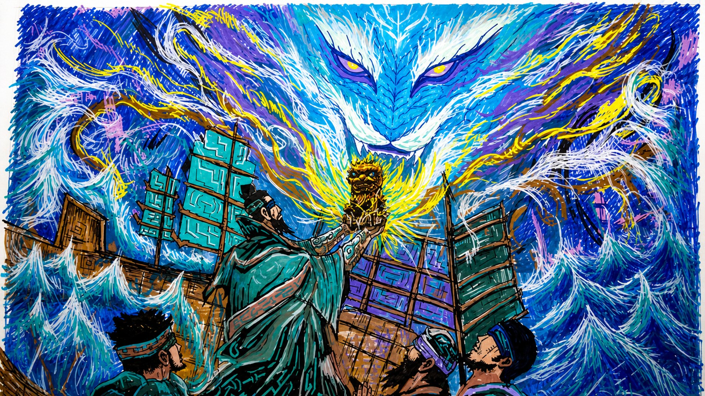
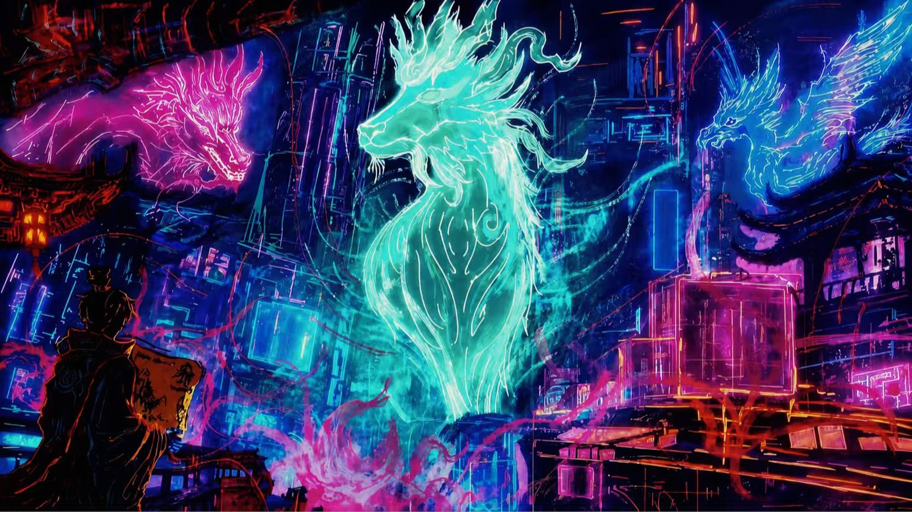

07 / Illustration · Graduation Project
《福建八闽
守境兽录》
毕业设计。以福建「八闽」的地域文化为母题，把守境的神兽放进两种截然不同的视觉语言里：一幅重彩水墨，一幅赛博霓虹。
- 类型
- 插画系列 / 毕业设计
- 年份
- 2026
- 工具
- Procreate
- 规模
- 系列（本页收录 2 幅）

Concept / 概念
「八闽」是福建的旧称。福建多山、多海、多神信仰，几乎每个地方都有自己的「守境」神兽。这组插画想做的事，是把这些散落在民间的守护意象收进同一个兽录里——不是重画一遍神兽，而是给它们一套统一的语法。
目前收录的两幅用了完全不同的视觉语言，但共享同一个结构：画面里都有人、都有兽，兽都以巨大的体量压在人的上方。人和兽不看对方，各自望向画面之外——守境的关系不靠对视说明，靠体量差说明。
Piece 01 / 水墨重彩
青蓝为主调。海涛与云气用粗笔触一层层堆叠，几乎不留平涂；守境兽从雾里探出，只露出头部与双眼，其余全藏在流动的线条里。看不见的部分比看得见的更重——这是我想在这幅里表达的东西。
下方人物手捧金色兽首，站在古船的甲板上。「献」这个动作让画面有了仪式感，也交代了人与兽的从属关系。色彩上刻意让金只出现在兽首这一处，它成为全画唯一的暖点，视线自然会落过去。
Piece 02 / 霓虹赛博
把神兽搬进夜里的城市。用霓虹光带替代墨线，粉、品红、青绿三色对撞，建筑与管线层层压叠。人物的剪影站在前景，手里提着一盏灯——传统和科技在同一张画里，谁也没有压过谁。
这一幅其实是在试另一条路：如果「守境」这个母题换到现代城市，它该长什么样。答案大概是，它会长得和数据一样。
Method / 方法
两幅都在 Procreate 里完成：先铺黑白稿定大关系，确认明暗层次之后才分层上色。全程叠加了大量笔刷肌理，避免出现"平涂感"——重彩水墨那幅的笔触甚至是逐层压上去的，一层的边缘必须比下一层硬。
神兽不需要画得完整。留白越多，它的体量反而越大。
本页收录的是系列的前两幅，后续会继续扩展成完整的「兽录」。
Series / 系列
